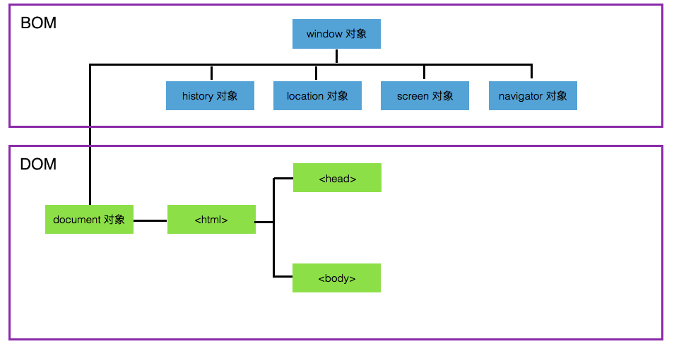

BOM 的全称为 Browser Object Model，被译为 浏览器对象模型。BOM 提供了独立于 HTML 页面内容，而与浏览器相关的一系列对象。主要被用于管理浏览器窗口及与浏览器窗口之间通信等功能。
BOM 由一系列对象构成，这些对象可以简单理解为是由各个浏览器所提供的。例如 Window 对象等。
值得注意的是: BOM 是 JavaScript 中唯一一个没有标准的。
JavaScript 中的语法标准是 ECMA，DOM 的标准是 W3C 定制的。
在学习 DOM 标准时，我们知道 DOM 是通过树形结构来解析 HTML 页面的。而 BOM 是浏览器提供的一系列对象，其中包含 DOM 的内容。具体图解如下:

通过上述图示我们可以知道，DOM 树结构中的入口 Document 对象也是属于 BOM 内容的一部分。
Window 对象是 BOM 结构中的最顶层的对象，其他对象都是以 Window 对象的属性形式出现。
Window 对象表示当前浏览器窗口，是 BOM 中最顶层的对象。Window 对象的属性和方法应用于当前整个浏览器窗口。
由于 Window 对象是浏览器窗口中最顶层的对象，也就是说，定义在全局域中的变量和函数，实际上都可以是 Window 对象的属性和方法。
例如我们在全局域中定义变量和函数，可以进行如下测试:
var v = 'this is string.';
function sayMe(){
console.log('this is function.')
}
console.log(v == window.v);
console.log(sayMe == window.sayMe);通过上述代码示例我们可以知道，访问全局变量 v 和全局函数 sayMe()，可以通过 Window 对象进行访问。
值得说明的是: 这一点与 JavaScript 作用域有很大关系。
Window 对象的 self 属性返回当前浏览器窗口的只读属性。换句话讲，self 属性返回的是 Window 对象的引用。
我们可以通过以下方式来测试 self 属性:
console.log(window == window.self);上述代码示例运行的结果为 true。
我们也可以通过以下代码判断当前浏览器是否是最顶层窗口:
if (window.top!=window.self) {
console.log("这个窗口不是最顶层窗口");
}else{
console.log("这个窗口是最顶层窗口");
} Window 对象提供了以下两个滚动浏览器窗口的方法:
我们可以通过以下案例进行学习:
// 点击按钮，窗口向下移动 200px
var btn1 = document.getElementById('btn1');
btn1.onclick = function(){
window.scrollBy(100,200);
}
// 点击按钮，窗口向上移动 200px
var btn2 = document.getElementById('btn2');
btn2.onclick = function(){
window.scrollBy(100,-200);
}Navigator 对象表示当前浏览器，该对象包含了浏览器的信息。
值得注意的是: Navigator 对象没有相应标准，不过各个浏览器都支持。
Navigator 对象提供一系列常用属性，获取当前浏览器的信息。具体内容如下:
| 属性名称 | 说明 |
|---|---|
| appCodeName | 浏览器的代码名 |
| appName | 浏览器的名称 |
| appVersion | 浏览器的平台和版本信息 |
| platform | 运行浏览器的操作系统平台 |
console.log('浏览器的代码名: ' + navigator.appCodeName);
console.log('浏览器的名称: ' + navigator.appName);
console.log('浏览器的平台和版本信息: ' + navigator.appVersion);
console.log('运行浏览器的操作系统平台: ' + navigator.platform);上述 JavaScript 代码运行的结果如下:
浏览器的代码名: Mozilla
浏览器的名称: Netscape
浏览器的平台和版本信息: 5.0 (Macintosh; Intel Mac OS X 10_12_4) AppleWebKit/537.36 (KHTML, like Gecko) Chrome/56.0.2924.87 Safari/537.36
运行浏览器的操作系统平台: MacIntelNavigator 对象提供很多属性，可以来识别当前浏览器及操作系统信息。但绝大多数属性在目前浏览器中已经不再起作用了。而 Navigator 对象的 userAgent 属性依旧可以实现识别浏览器的功能。
userAgent 属性返回由客户机发送服务器的 user-agent 头部的值。userAgent 属性是一个只读的字符串，声明了浏览器用于 HTTP 请求的用户代理头的值。
| 浏览器产品 | userAgent 属性值 |
|---|---|
| Firefox | Mozilla/5.0 (Windows NT 6.1; WOW64; rv:50.0) Gecko/20100101 Firefox/50.0 |
| Chrome | Mozilla/5.0 (Windows NT 6.1; Win64; x64) AppleWebKit/537.36 (KHTML, like Gecko) Chrome/52.0.2743.82 Safari/537.36 |
| IE 8 | Mozilla/4.0 (compatible; MSIE 8.0; Windows NT 6.1; WOW64; Trident/7.0; SLCC2; .NET CLR 2.0.50727; .NET CLR 3.5.30729; .NET CLR 3.0.30729; Media Center PC 6.0; .NET4.0C; .NET4.0E) |
| IE 9 | Mozilla/5.0 (compatible; MSIE 9.0; Windows NT 6.1; WOW64; Trident/7.0; SLCC2; .NET CLR 2.0.50727; .NET CLR 3.5.30729; .NET CLR 3.0.30729; Media Center PC 6.0; .NET4.0C; .NET4.0E) |
| IE 10 | Mozilla/5.0 (compatible; MSIE 10.0; Windows NT 6.1; WOW64; Trident/7.0; SLCC2; .NET CLR 2.0.50727; .NET CLR 3.5.30729; .NET CLR 3.0.30729; Media Center PC 6.0; .NET4.0C; .NET4.0E) |
| IE 11 | Mozilla/5.0 (Windows NT 6.1; WOW64; Trident/7.0; SLCC2; .NET CLR 2.0.50727; .NET CLR 3.5.30729; .NET CLR 3.0.30729; Media Center PC 6.0; .NET4.0C; .NET4.0E; rv:11.0) like Gecko |
| Safari | Mozilla/5.0 (Macintosh; Intel Mac OS X 10124) AppleWebKit/603.1.30 (KHTML, like Gecko) Version/10.1 Safari/603.1.30 |
值得注意的是: IE 11 版本的 userAgent 属性信息已经不再包含有关 IE 浏览器的信息，所以我们不能通过 userAgent 属性判断 IE 11 浏览器了。
我们可以通过 userAgent 属性获取用户当前使用的浏览器产品，提供相应的浏览器兼容解决方案。具体如下代码所示:
var ua = navigator.userAgent;
if(/firefox/i.test(ua)){
console.log('当前使用的是 Firefox 浏览器');
}else if(/chrome/i.test(ua)){
console.log('当前使用的是 Chrome 浏览器');
}else if(/safari/i.test(ua)){
console.log('当前使用的是 Safari 浏览器');
}else if(/msie/i.test(ua)){
console.log('当前使用的是 IE 11 之前版本的浏览器');
}else if("ActiveXObject" in window){
console.log('当前使用的是 IE 11 浏览器');
}我们还可以通过 userAgent 属性获取用户当前使用的操作系统信息，具体代码示例如下:
if (/windows/i.test(ua)){
console.log('当前使用的是 Windows 操作系统');
}else if (/mac/i.test(ua)){
console.log('当前使用的是 Mac 操作系统');
}else if (/android/i.test(ua)){
console.log('当前使用的是 Android 操作系统');
}else if (/iphone/i.test(ua)){
console.log('当前使用的是 iPhone 操作系统');
}History 对象包含用户在浏览器中访问过的 URL（网址）。
History 对象的 length 属性可以获取用户在浏览器中访问网址的数量。
console.log('用户访问的网址数量为: ' + history.length);History 对象还提供了以下方法实现浏览器前进和后退功能。具体方法如下:
Location 对象包含了浏览器的地址栏中的信息。该对象主要用于获取和设置地址。
通过可以获取和设置浏览器的地址栏中的地址信息。
// 获取当前浏览器窗口的地址栏信息
console.log('Location对象为: ' + window.location);
// 设置当前浏览器窗口的地址栏信息
window.location = 'http://www.baidu.com';上述功能我们同样可以通过 Location 对象的 href 属性完成。
// 获取当前浏览器窗口的地址栏信息
console.log('Location对象的href属性为: ' + location.href);
// 设置当前浏览器窗口的地址栏信息
location.href = 'http://www.baidu.com';Location 对象提供了以下方法:
| 方法名 | 说明 |
|---|---|
| assign() | 载入一个新的文档，作用和直接修改 location 相同 |
| reload() | 重新载入当前文档，作用和刷新按钮一样。参数为 true 时，则会强制清空缓存刷新页面 |
| replace() | 用新的文档替换当前文档（不会生成历史记录，不能使用回退按钮回退） |
Window 对象提供了有关定时执行 JavaScript 代码逻辑的方法，具体方法如下:
setInterval(code,millisec,lang)该方法的参数如下:
| 参数名 | 说明 |
|---|---|
| code | 要调用的函数或要执行的代码 |
| millisec | 定时器的周期时间，以毫秒为单位 |
| lang | 可选，JavaScript |
我们可以通过以下案例进行学习:
<!DOCTYPE html>
<html lang="en">
<head>
<meta charset="UTF-8">
<title>定时器</title>
</head>
<body>
<button id="start" class="btn btn-primary">开始</button>
<button id="stop" class="btn btn-primary">结束</button>
<input class="form-control" type="text" id="show">
</body>
</html>在上述 HTML 页面中，我们通过 setInterval() 方法实现定时累加效果。
var show = document.getElementById('show');
var num = 0,t;
var start = document.getElementById('start');
start.onclick = function(){
t = setInterval(function(){
show.value = num;
num++;
},1000);
}我们还可以通过 clearInterval() 方法来取消 setInterval() 方法实现的定时器。
var stop = document.getElementById('stop');
stop.onclick = function () {
t = clearInterval(t);
}本笔记的内容免费开源，任何人都可以免费学习、分享，甚至可以进行修改。但需要注明作者及来源，并且不能用于商业。
本笔记采用知识共享署名-非商业性使用-禁止演绎 4.0 国际许可协议进行许可。